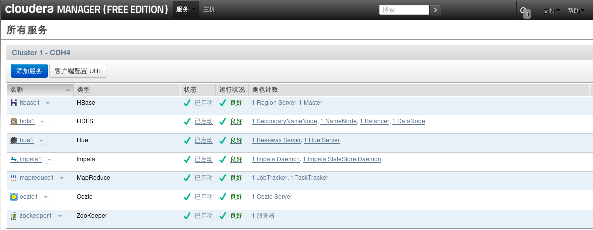

|
本帖最后由 pig2 于 2014-9-19 15:33 编辑
CDH安装有四种方式
- Cloudera manager
- Tarball
- Yum
- Rpm
其中Yum及Rpm安装可以算作一种安装方式
下面是四种方式分别介绍：
Cloudera Manager和CDH4.1的安装
Cloudera Manager的安装需要先修改机器的三个配置：
关闭防火墙：service iptables stop；
关闭selinux：setenforce 0或修改/etc/selinux/config：SELINUX=disabled；
配置代理：在/etc/yum.conf加入如下内容：http_proxy=http://server:port。
最好在/etc/yum.conf增加timeout时间，timeout=55555。自己设置长点就行。
准备安装文件cloudera-manager-installer.bin，这是个二进制文件，下载地址：https://ccp.cloudera.com/display ... a+Manager+Downloads，这个要在64位的机器上运行，我让它运行在CentOS-6.2，x86_64上。然后设置下执行权限，chmod u+x cloudera-manager-installer.bin，接着就直接执行它./ cloudera-manager-installer.bin。这里有个问题，在我自己的虚拟机上一直运行不了，出现的问题：cannot execute binary file，可能因为它是32位的吧。
在整个安装过程中，要确保你的机器能够联网，会出现让你选择的画面，一般就ENTER，next，accpet就行了，然后慢慢等待等到它自行安装结束。
启动cloudera manager：在浏览器输入你的主机，我的是http:192.168.20.195:7180。注册一个账号登陆如（admin，admin），进去后，会让我们选择主机，我就装了伪分布式，然后安装CDH4.1和impala，这个安装过程时间比较长，因为它是外国的网站，网络稳定与否对安装的影响很大，我装这个花费很长时间，期间如果出现某个安装包错误，就必须重新开始安装，因此强调下，最好使用一个干净的系统（没装过hadoop相关程序），它会去网上下载很多rpm包，默认地把hadoop，hbase，zookeeper，hive，impala等都装到了user/lib底下，耐心等待吧。
安装好了之后，我们就可以启动自己需要的服务，当然某些服务彼此会有依赖，没关系的cloudera manager太强大了，它能帮你识别，帮助你开启相关服务。我开启的服务界面如下图所示：

在开启服务的过程中，其他的服务都正常开启了，但是最关键的我需要的服务却一直显示不良状态，如下图：
Impala没正常启动，这是我这次研究的重中之重。出现问题，就开始找问题，后来发现是impala和数据库（我用的是mysql）没连接成功。下面着重讲述下配置mysql连接impala。
Impala的运行需要有配置了Mysql或PostgreSQL的hive metastore，hive本身支持的derby数据库，impala不支持。
一、配置远程数据库作为Hive Mestastore。
A:安装MySQL JDBC连接器，从'http://www.mysql.com/get/Downloads/Connector-J/mysql-connector-java-5.1.22.tar.gz下载连接器，并把解压后的mysql-connector-java-5.1.22-bin.jar文件拷贝至/usr/lib/hive/lib下。
B:MySQL管理员需要用hive-schema-0.9.0.mysql.sql来建立初始数据库：- mysql Cu root Cp
- mysql > CREATE DATABASE hivemetastoredb;
- mysql > USE hivemetastoredb;
- mysql > SOURCE /usr/lib/hive/scripts/metastore/upgrade/mysql/
- hive-schema-0.9.0.mysql.sql;
- mysql > CREATE USER ‘hive’@’%’ IDENTIFIED BY ‘hive’;
- mysql > CREATE ALL PRIVILEGES ON hivemetastoredb.* TO ‘hive’@’%’ WITH GRANT OPTION;
- mysql > FLUSH PRIVILEGES;
- mysql > QUIT;
- $ vim /etc/my.cnf
- 在[mysqld]下加入
- Default-character-set=utf8
二、新增Impala服务
进入cloudera manager管理界面，新增impala服务，点击impala，点击配置，可看到如下界面：
在这个配置里面，需要配置如下参数：
| Property | Value | | DataNode Local Path Access Users dfs.block.local-path-access.user | impala | | DataNode Data Directory Permissions dfs.datanode.data.dir.perm | 755 | | Enable HDFS Block Metadata API dfs.datanode.hdfs-blocks-metadata.enabled | true | | Enable HDFS Short Circuit Read dfs.client.read.shortcircuit | true |
Hive Metastore的配置如上图所示，数据库连接密码：hive。
三、配置好impala后，点击重新启动impala。启动成功后可以看到如下界面：
两个服务都完成，才算impala启动成功。
配置Hue Beeswax连接到Impala。
这个配置是为了让Hue Beeswax网站接口来执行Impala语句。修改/etc/hue/hue.ini，如下内容：- [beeswax]
- beeswax_server_host=192.168.20.195
- beeswax_server_port=8003
最后说明一下，这次配置遇到的问题及解决方法。
问题一：无法安装hadoop-hdfs包。
如下图所示：
图中说明的错误是：事务验证出错，后面的信息显示了是版本冲突问题。也就是说，本来电脑里面已经有装了hadoop-1.0.3现在和cloudera的hadoop-hdfs-2.0.0冲突，导致hadoo-hdfs无法安装，也就使得安装失败，又得重新来一次了，悲剧啊。
解决问题，我找到了系统里安装hadoop-1.0.3的所有包，然后把它们全部删掉，包括安装的目录。- $ rpm Cqa | grep Ci hadoop-1.0.3
- hadoop-1.0.3+20.38283-1.el6.x86_64
- $ rpm Cql hadoop-1.0.3+20.38283-1.el6.x86_64(查找安装的位置)
- $ rpm Ce hadoop-1.0.3+20.38283-1.el6.x86_64(卸载)
问题二：启动impala时，impala daemon无法启动，查看日志出现如下问题。
这个问题，说是连接到mysql被禁止，但是我用java自己做了个程序去连接mysql没有问题，很奇怪，
javax.jdo.JDOFatalDataStoreException: Access denied for user 'hive'@'localhost' (using password: YES)，最主要是这句话，我本来连接数据库是，用root登录mysql建立了个新用户hive，然后不使用密码，同时在impala中的配置目录里，默认数据库用户hive登录也是不需要密码的，但是却始终连不上，后来经过分析这句话，using password：YES，也就是说，本来不需要密码，你却用了密码登陆到mysql，这就有问题了，也就是说，虽然配置里的密码是空的，但是impala默认还是以有密码的形式登录到mysql，这样连接就一直被禁止了。解决的方案是：删掉hive用户，建立一个用户名和密码都是hive的用户接着，把配置里密码也输入hive，问题终于解决了。
----------------------------------------------------------------------------------------------------------------------------------------------------------------
hadoop CDH3U5 使用tarball完整安装过程
用在线安装的方式, 需要依赖于外部网络, 等待时间够长的, 不利于重复部署. 用tarball的方式重新部署了一下. 牵扯到以前是root用户做的, 本次按要求用非root用户遇到了些权限控制方面的问题
统一说明
部署: ip
| Hostname
| 安装组件
| 10.0.0.123
| Hadoop-master
| -namenode, JobTracker,datanode,taskTracker
-hbase-master,hbase-thrift
-secondarynamenode
-zookeeper-server
| 10.0.0.125
| Hadoop-lave
| -datanode,taskTracker
-hbase-regionServer
-zookeeper-server
|
|
|
|
下载 从https://ccp.cloudera.com/display ... wnloadable+Tarballs下载需要的组件 hadoop,hbase,Hive,zookeeper
http://archive.cloudera.com/cdh/3/hadoop-0.20.2-cdh3u5.tar.gz http://archive.cloudera.com/cdh/3/zookeeper-3.3.5-cdh3u5.tar.gz http://archive.cloudera.com/cdh/3/hive-0.7.1-cdh3u5.tar.gz http://archive.cloudera.com/cdh/3/hbase-0.90.6-cdh3u5.tar.gz 将压缩包放到/hadoop/cdh3中去. 计划如下
目录
| 所有者
| 权限
|
| /hadoop/cdh3
| hadoop
| 755
| Hadoop及其组件的运行环境
| /hadoop/data
| hadoop
| 755
| 见下
| /hadoop/data/hdfs
| hadoop
| 700
| 数据节点存放数据的地方, 后续由hdfs-site.xml中的dfs.data.dir指定
| /hadoop/data/storage
| hadoop
| 777
| 所有上传到Hadoop的文件的存放目录，所以要确保这个目录足够大后续由hadoop.tmp.dir 指定
|
用户名
| Home
| 用途
| hadoop
| /home/hadoop
| [1]用于启动停止hadoop等维护
[2] /hadoop/data/hdfs目录的700权限拥有者. 也可以另选用户
|
|
|
|
|
|
|
|
|
|
安装过程 [1]下载JDK 此时选的是jdk1.6.0_43 http://www.oracle.com/technetwork/java/javase/downloads/jdk6downloads-1902814.html
Linux x64 68.7 MB jdk-6u43-linux-x64.bin
放到/usr/local/share/下并执行 ./ jdk-6u43-linux-x64.bin 然后设置JAVA_HOME及PATH环境变量,注意PATH要增加, 不要覆盖 root@hadoop-master:~# which java /usr/local/share/jdk1.6.0_43/bin/java root@hadoop-master:~# echo $JAVA_HOME /usr/local/share/jdk1.6.0_43 master与slave都要安装, 为了配置方便拷贝, 一定给要一样的目录
[2]建立hadoop操作用户 root@hadoop-master:/hadoop/cdh3/hadoop-0.20.2-cdh3u5/bin# useradd hadoop -m
root@hadoop-master:/hadoop/cdh3/hadoop-0.20.2-cdh3u5/bin# su - hadoop
$ bash
hadoop@hadoop-master:~$
hadoop@hadoop-master:~$ pwd
/home/hadoop
hadoop@hadoop-master:~$ ll
total 28
drwxr-xr-x 3 hadoop hadoop 4096 2013-03-07 05:03 ./
drwxr-xr-x 4 root root 4096 2013-03-07 05:02 ../
-rw-r--r-- 1 hadoop hadoop 220 2011-05-18 03:00 .bash_logout
-rw-r--r-- 1 hadoop hadoop 3353 2011-05-18 03:00 .bashrc
-rw-r--r-- 1 hadoop hadoop 179 2011-06-22 15:51 examples.desktop
-rw-r--r-- 1 hadoop hadoop 675 2011-05-18 03:00 .profile
| 执行ssh授信
hadoop@hadoop-master:~$ ssh-keygen -t rsa
Generating public/private rsa key pair.
Enter file in which to save the key (/home/hadoop/.ssh/id_rsa):
Created directory '/home/hadoop/.ssh'.
Enter passphrase (empty for no passphrase):
Enter same passphrase again:
Your identification has been saved in /home/hadoop/.ssh/id_rsa.
Your public key has been saved in /home/hadoop/.ssh/id_rsa.pub.
The key fingerprint is:
17:cc:2b:9c:81:5b:48:53:ee:d6:35:bc:1b:0f:9a:14 hadoop@hadoop-master
The key's randomart image is:
+--[ RSA 2048]----+
| o.. |
| . = o . |
| o + E + |
| = + = o |
| . S = + |
| . + o = |
| o . . |
| |
| |
+-----------------+
hadoop@hadoop-master:~$
hadoop@hadoop-master:~$ cd .ssh
hadoop@hadoop-master:~/.ssh$ ll
total 16
drwxr-xr-x 2 hadoop hadoop 4096 2013-03-07 05:04 ./
drwxr-xr-x 3 hadoop hadoop 4096 2013-03-07 05:04 ../
-rw------- 1 hadoop hadoop 1675 2013-03-07 05:04 id_rsa
-rw-r--r-- 1 hadoop hadoop 402 2013-03-07 05:04 id_rsa.pub
hadoop@hadoop-master:~/.ssh$ cat id_rsa.pub >> authorized_keys
| 在hadoop-slave添加hadoop用户, 用户名要与master相同
然后将master的id_rsa.pub 追加到slave机器的/home/hadoop/.ssh/authorized_keys中
到此, master应该可以ssh免密码登录slave了
|
[3]安装hadoop-0.20.2-cdh3u5 解压缩: cd /hadoop/cdh3 tar zxvf hadoop-0.20.2-cdh3u5.tar.gz 修改配置文件 cdh3\hadoop-0.20.2-cdh3u5\conf\core-site.xml
<?xml version="1.0"?>
<?xml-stylesheet type="text/xsl" href="configuration.xsl"?>
<!-- Put site-specific property overrides in this file. -->
<configuration>
<!--- global properties -->
<property>
<name>hadoop.tmp.dir</name>
<value>/hadoop/data/storage</value>
<description>A directory for other temporary directories.</description>
</property>
<!-- file system properties -->
<property>
<name>fs.default.name</name>
<value>hdfs://hadoop-master:8020</value>
</property>
</configuration>
| cdh3\hadoop-0.20.2-cdh3u5\conf\hadoop-env.sh
将# export JAVA_HOME=/usr/lib/j2sdk1.6-sun
修改为
export JAVA_HOME=/usr/local/share/jdk1.6.0_43
| cdh3\hadoop-0.20.2-cdh3u5\conf\hdfs-site.xml
<?xml version="1.0"?>
<?xml-stylesheet type="text/xsl" href="configuration.xsl"?>
<!-- Put site-specific property overrides in this file. -->
<configuration>
<property>
<name>dfs.data.dir</name>
<value>/hadoop/data/hdfs</value>
</property>
<property>
<name>dfs.replication</name>
<value>2</value>
</property>
<property>
<name>dfs.datanode.max.xcievers</name>
<value>4096</value>
</property>
</configuration>
| cdh3\hadoop-0.20.2-cdh3u5\conf\mapred-site.xml
<?xml version="1.0"?>
<?xml-stylesheet type="text/xsl" href="configuration.xsl"?>
<!-- Put site-specific property overrides in this file. -->
<configuration>
<property>
<name>mapred.job.tracker</name>
<value>hdfs://hadoop-master:8021</value>
</property>
<property>
<name>mapred.system.dir</name>
<value>/mapred/system</value>
</property>
</configuration>
| cdh3\hadoop-0.20.2-cdh3u5\conf\masters
hadoop-master
| cdh3\hadoop-0.20.2-cdh3u5\conf\slaves
hadoop-slave
注:如果将hadoop-master也加进来, 那在master机器上也启动一个datanode, 如果机器规划多的话就不要加了,
|
Hadoop用户下创建目录
sudo mkdir -p /hadoop/data/storage
sudo mkdir -p /hadoop/data/hdfs
sudo chmod 700 /hadoop/data/hdfs
sudo chown -R hadoop:hadoop /hadoop/data/hdfs
sudo chmod 777 /hadoop/data/storage
sudo chmod o+t /hadoop/data/storage
Hadoop用户下执行格式化
hadoop@hadoop-master:~$ hadoop namenode -format
|
启动hadoop hadoop@hadoop-master:~$ cd /hadoop/cdh3/hadoop-0.20.2-cdh3u5/bin
hadoop@hadoop-master:/hadoop/cdh3/hadoop-0.20.2-cdh3u5/bin$ ./start-all.sh
starting namenode, logging to /mnt/hgfs/hadoop/cdh3/hadoop-0.20.2-cdh3u5/bin/../logs/hadoop-hadoop-namenode-hadoop-master.out
hadoop-slave: starting datanode, logging to /mnt/hgfs/hadoop/cdh3/hadoop-0.20.2-cdh3u5/bin/../logs/hadoop-hadoop-datanode-hadoop-slave.out
hadoop-master: starting secondarynamenode, logging to /mnt/hgfs/hadoop/cdh3/hadoop-0.20.2-cdh3u5/bin/../logs/hadoop-hadoop-secondarynamenode-hadoop-master.out
starting jobtracker, logging to /mnt/hgfs/hadoop/cdh3/hadoop-0.20.2-cdh3u5/bin/../logs/hadoop-hadoop-jobtracker-hadoop-master.out
hadoop-slave: starting tasktracker, logging to /mnt/hgfs/hadoop/cdh3/hadoop-0.20.2-cdh3u5/bin/../logs/hadoop-hadoop-tasktracker-hadoop-slave.out
| 查看启动结果
hadoop@hadoop-master:/hadoop/cdh3/hadoop-0.20.2-cdh3u5/bin$ jps
5759 SecondaryNameNode
5462 NameNode
5832 JobTracker
5890 Jps
hadoop@hadoop-master:/hadoop/cdh3/hadoop-0.20.2-cdh3u5/bin$
|
----------------------------------------------------------------------------------------------------------------------------------------
对于Yum，Rpm的方式就不详细介绍了，下面总体介绍一下：
Redhat/Centos系列可以下载rpm包安装，也可以配置repo，使用Yum方式一键安装：
Redhat/Centos/Oracle 5- wget http://archive.cloudera.com/cdh4/redhat/5/x86_64/cdh/cdh4-repository-1-0.noarch.rpm
- sudo rpm --import http://archive.cloudera.com/cdh4/redhat/5/x86_64/cdh/RPM-GPG-KEY-cloudera
然后安装各组件：- $ sudo yum install hadoop-yarn-resourcemanager
- $ sudo yum install hadoop-hdfs-namenode
- $ sudo yum install hadoop-hdfs-secondarynamenode
- $ sudo yum install hadoop-yarn-nodemanager hadoop-hdfs-datanode hadoop-mapreduce
- $ sudo yum install hadoop-mapreduce
CDH5已经使用了Hadoop2.2.0，我们介绍一下如何手动安装：
Hadoop CDH5 手动安装伪分布式模式
由于Cloudera强烈建议使用rmp包或者apt-get的方式安装，一时半刻我都没有找到手动安装的说明，在安装的遇到多个问题，稍作记录
首先环境要求
JDK1.7_u25+
Maven3.0.5
protoc2.5
cmake
ant
zlib1g-dev
在安装完protocbuf后无法正常运行protoc命令，报错
protoc: error while loading shared libraries: libprotoc.so.8: cannot open shared object file: No such file or directory
解决方案是在make install后再执行一句sudo ldconfig
修改配置文件
etc/hadoop/core-site.xml - <property>
- <name>fs.defaultFS</name>
- <value>hdfs://localhost</value>
- </property>
etc/hadoop/hdfs-site.xml - <property>
- <name>dfs.replication</name>
- <value>1</value>
- </property>
- <property>
- <name>hadoop.tmp.dir</name>
- <value>/home/username/src/cdh5/hadoop/hdfs</value>
- </property>
- <property>
- <name>dfs.namenode.http-address</name>
- <value>localhost:50070</value>
- </property>
-
- <property>
- <name>dfs.namenode.secondary.http-address</name>
- <value>localhost:50090</value>
- </property>
etc/hadoop/yarn-site.xml - <property>
- <name>yarn.resourcemanager.hostname</name>
- <value>localhost</value>
- </property>
-
- <property>
- <name>yarn.nodemanager.aux-services</name>
- <value>mapreduce_shuffle</value>
- </property>
-
- <property>
- <name>yarn.nodemanager.aux-services.mapreduce.shuffle.class</name>
- <value>org.apache.hadoop.mapred.ShuffleHandler</value>
- </property>
然后format，启动start-all.sh
启动伪分布式模式碰到的第一个问题是找不到JAVA_HOME
原因是启动命令调用sbin/slaves.sh脚本，这个脚本中有使用ssh远程调用其他机器的命令
在这种情况下bashrc中的设置环境变量的语句没有被执行，原因是bashrc中第一句语句（[ -z "$PS1" ] && return）会判断调用模式是否是交互式模式，如果是非交互式模式则直接退出，所以写在下面的语句都没有被执行，解决方法有两个
1.是把设置JAVA_HOME的语句写在bashrc文件的最前面
2.是修改etc/hadoop/hadoop-evn.sh中的export JAVA_HOME=${JAVA_HOME}，不要使用系统的环境变量赋值，直接改成绝对路径
修改完后再次启动成功
使用jps会看到所有的进程
3536 ResourceManager
3116 DataNode
2900 NameNode
3378 SecondaryNameNode
3755 NodeManager
2168 Jps
使用hadoop fs -ls 查看文件系统的时候会遇到报错
WARN util.NativeCodeLoader: Unable to load native-hadoop library for your platform… using builtin-java classes where applicable
原因是缺少libhadoop.so文件
在src目录或者hadoop-common子项目中重新build，命令：mvn package -DskipTests -Pdist,native,docs -Dtar
再次遇到报错[ERROR] class file for org.mortbay.component.AbstractLifeCycle not found
- <dependency>
- <groupId>org.mortbay.jetty</groupId>
- <artifactId>jetty-util</artifactId>
- <scope>test</scope>
- </dependency>
再次编译遇到报错Failed to execute goal org.apache.maven.plugins:maven-antrun-plugin:1.6:run (make) on project hadoop-common:
这是没有安装zlib1g-dev的关系，这个可以 使用apt-get安装
最后把生成的.so文件全部拷贝到lib/native/目录下，再次运行hadoop fs -ls没有报错信息
来自群组: Hadoop技术组 | 


 |关于我们|小黑屋|about云开发-学问论坛|社区-专注云技术
( 京ICP备12023829号 )
|关于我们|小黑屋|about云开发-学问论坛|社区-专注云技术
( 京ICP备12023829号 ) 


 窥视卡
窥视卡 雷达卡
雷达卡


 发表于 2014-2-3 15:49:17
发表于 2014-2-3 15:49:17

 QQ好友和群
QQ好友和群 QQ空间
QQ空间 腾讯微博
腾讯微博 腾讯朋友
腾讯朋友 收藏
收藏 转播
转播 分享
分享 淘帖
淘帖 支持
支持 反对
反对 提升卡
提升卡 置顶卡
置顶卡 沉默卡
沉默卡 喧嚣卡
喧嚣卡 变色卡
变色卡 千斤顶
千斤顶 照妖镜
照妖镜 楼主
楼主


 发表于 2014-12-8 18:05:29
发表于 2014-12-8 18:05:29